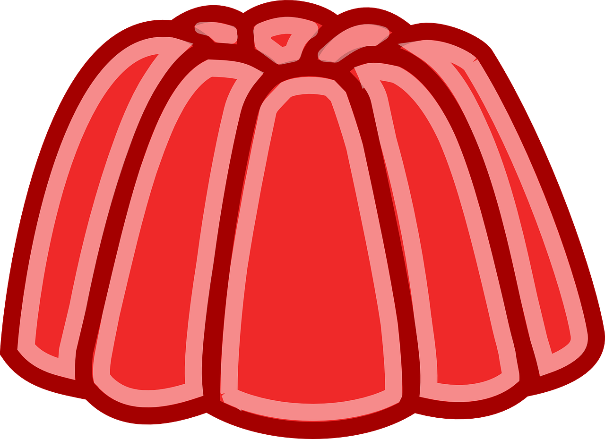

Jello

Chilly Dessert
Jello is a chilled jelly like dessert. It consists of water, gelatin, sweetener, and other ingredients which create a variety of flavors. The original four flavors were orange, lemon, strawberry & raspberry but this list has grown to include many other fruits as well.
Ingredients
- 1 Cup of Boiling Water
- 1 Cup of Cold Water
- 1 Gelatin Packet
- 1 Cup Diced Fruit
Directions
- Pour powdered gelatin into a bowl.
- Add 1 cup of boiling water to the gelatin, stirring until dissolved.
- Stir in 1 cup of cold water.
- Stir in diced fruit.
- Refrigerate for at least 4 hours, or until firm.
Home